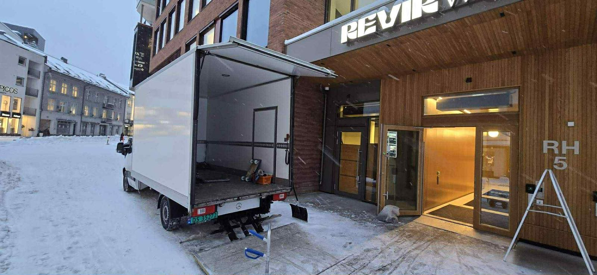
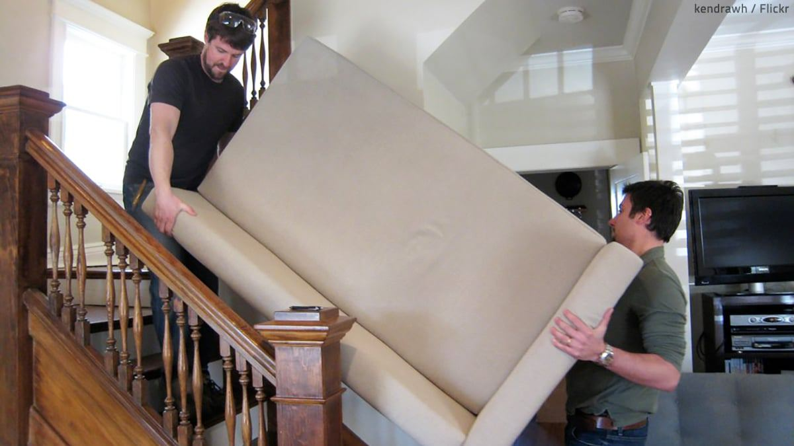

Hjem/Kontorflytting
Kontorflytting med minimal driftsstans
Vi flytter kontoret når kundene ikke ringer. Fredag ettermiddag ut, mandag morgen inn – med IT-utstyr, arkiv og møbler på riktig plass.


Plan før papp
Flyttingen begynner med en plan, ikke en bil
Bedriftsflytting handler om å holde virksomheten i gang. Vi kartlegger hva som må være på plass først, hva som kan stå i mellomlagring, og hvilke rom som kan flyttes sist.
- Flytting utenfor kontortid, kveld eller helg.
- Egen merking per avdeling og arbeidsplass.
- IT-utstyr pakkes og merkes særskilt.
- Arkiv og papir kjøres adskilt fra møbler.
- Mellomlagring hvis de to lokalene ikke er ledige samtidig.
- Sluttsjekk med oss før vi forlater lokalet.
Slik gjør vi det
Tre faser, én kontaktperson
Du forholder deg til én person hos oss gjennom hele flyttingen – ikke et nytt navn for hver samtale.
Befaring i lokalet
Vi går gjennom areal, antall arbeidsplasser, heis- og bæreforhold, og hva som krever spesiell håndtering.
Plan og fast pris
Du får en skriftlig plan med tidslinje, bemanning og pris. Vi avtaler rekkefølgen rom for rom.
Gjennomføring
Vi laster, kjører og bærer inn. Ved sluttsjekk går vi gjennom at alt er på plass før vi drar.
Fra liten virksomhet til større kontor
To mann med varebil, eller et helt team med flere biler over to dager. Vi setter bemanningen etter omfanget, ikke omvendt.
Skjermer, stoler og arkiv
Skjermer pakkes enkeltvis, stoler stablet, og arkiv eskene merkes med avdeling og rekkefølge. Ingenting settes ned uten at det står på planen.
Emballasjen forsvinner
Når alt er på plass tar vi med papp, plast og teip tilbake. Du sitter igjen med et kontor, ikke et lager.
Firmaets egne ord
«Minimal driftsstans for din virksomhet»
Det er derfor vi planlegger kontorflyttinger utenfor arbeidstid. Kundene merker det ikke, men mandagen er annerledes.
Profesjonell bedriftsflytting med minimal driftsstans for din virksomhet.
CJ Transport · om kontorflytting
Alle biler er GPS-sporet under flytteoppdraget.
CJ Transport · om trygghet
Fast pris etter befaring, ikke etter antall timer vi brukte.
CJ Transport · om pris
Flytter dere i år?
Book befaring i lokalet, så får dere en plan og en fast pris på e-post.